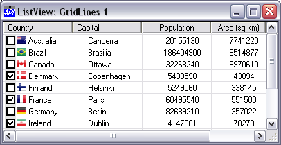

| Applies To: | ListView |
Description
The GridLines property specifies whether or not lines are displayed between items in a ListView object. GridLines applies only if the value of the View property is 'Report'.
GridLines is a single number with the value 0 (no lines are displayed) or 1 (lines are displayed); the default is 0.
The picture below illustrate the effect on the appearance of a ListView object, of setting GridLines to 1.
